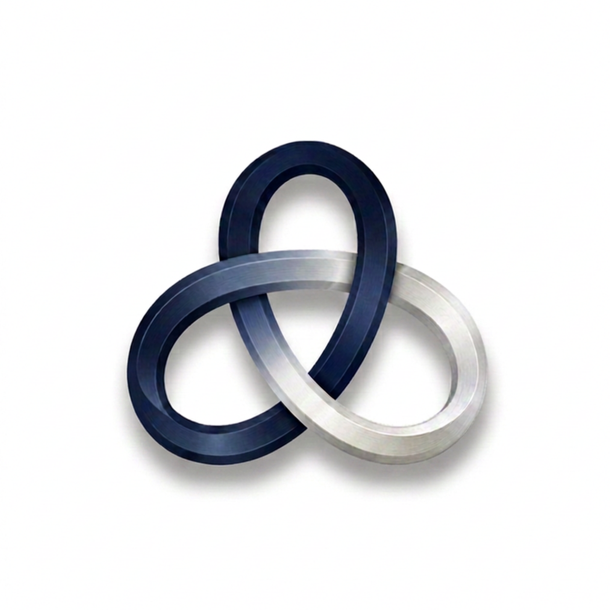
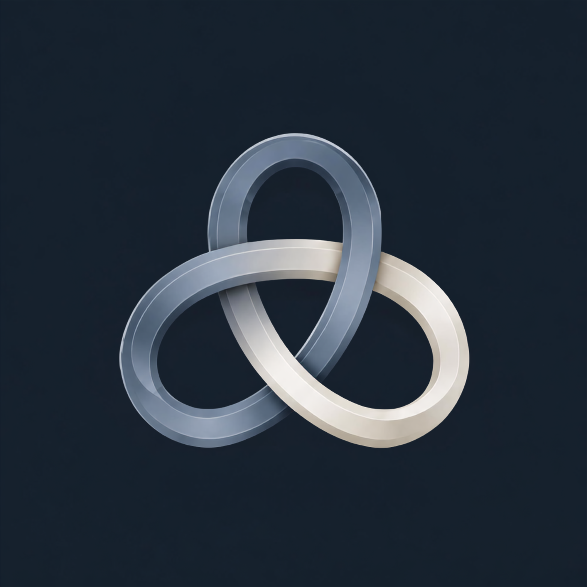

Colors, type, logo files and interface pieces for anyone making something for the Foundation.
This page is a reference, not the Foundation's website. The Foundation's site is stantonfoundation.org.
The full rules are in the guidelines. The logo files, icons and color values are in the brand kit.
Logo
scpf-lockup.svgLight grounds
scpf-lockup-dark.svgDark grounds

scpf-mark.svgKnot alone, light grounds

scpf-mark-dark.svgKnot alone, avatars
Do not recolor, outline, stretch or box the knot. Keep clear space
of at least a quarter of the knot's width on every side. Minimum
sizes: the knot alone 32px tall on screen; the full lockup 120px
wide on screen, or 1 inch in print. More files, including muted and
transparent versions, are in assets/logo/.
Color
Color guidelines and contrast →
Roughly 60% paper and white, 26% navy, 9% silver and steel, 5% gold. Gold means "give". Use it for giving actions and little else, and never for small text on a light ground.
For print, use the CMYK values and let the paper stand in for the page ground. Field border is a screen color for form fields and has no print value.
Typography
Newsreader for headings and figures. Instrument Sans for everything else. Both are free on Google Fonts.
.displayNewsreader 400 · 62px
h2Newsreader 500 · 40px
h3Newsreader 500 · 26px
.leadInstrument Sans 400 · 20px
Additional financial support will compound Stanton's success.
pInstrument Sans 400 · 15.5px
The Foundation's mission is to underwrite Stanton's academic, capital improvement, arts, and extracurricular initiatives that are not included in the school district's budget.
.labelInstrument Sans 600 · 12.5px caps
Components
Samples only: nothing in a dashed frame does anything. The header, goal meter, photo reel and footer are described in the component guidelines and shown on the website itself.
Buttons
Cards
Navy top rule. Numbered items in a set.
White with a hairline border.
One per page, for a giving prompt.
Form fields
Shape
Squared corners everywhere, 1px hairline rules, no shadows. Sections are padded 84px top and bottom, with a 6vw gutter.
Voice
Warm and specific. Name the project and the amount, and say only what can be sourced. From the website:
“Stanton is, and always will be, your home.”